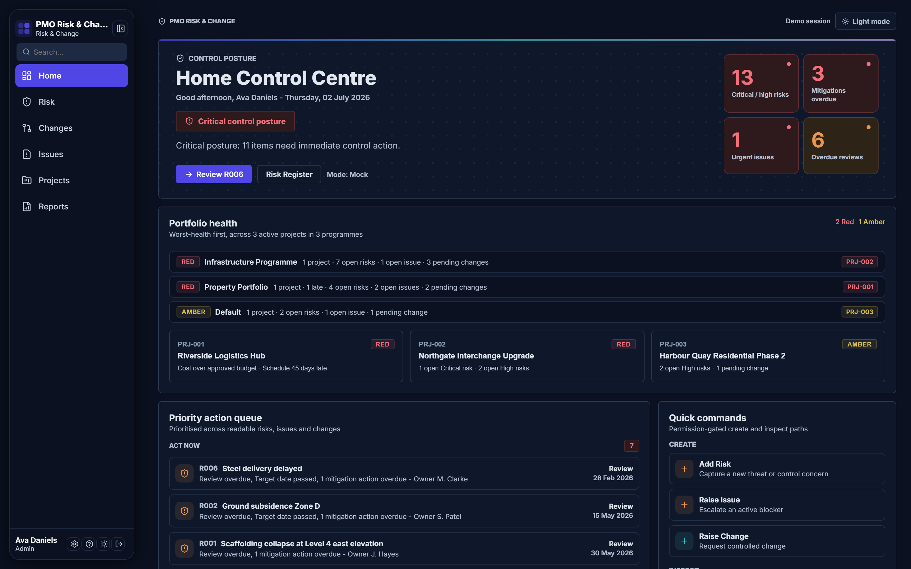
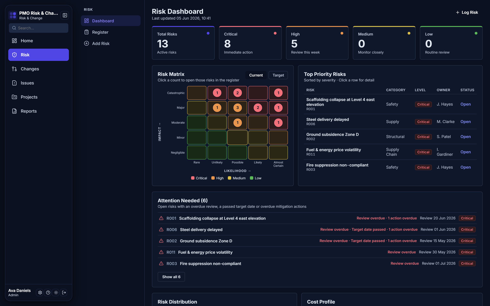
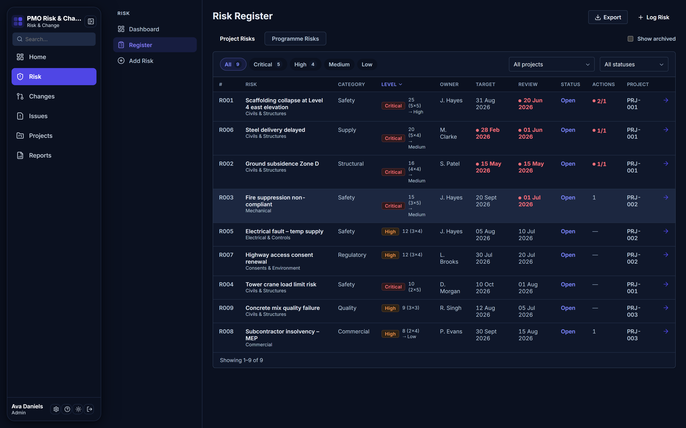
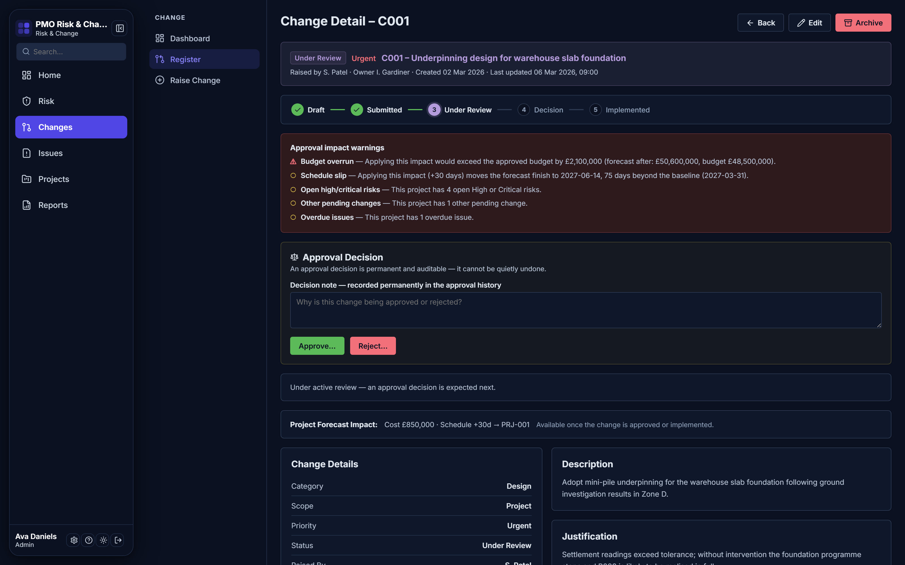
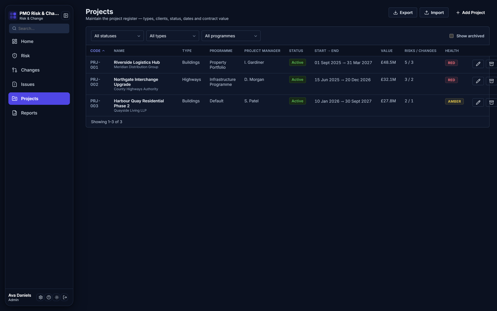
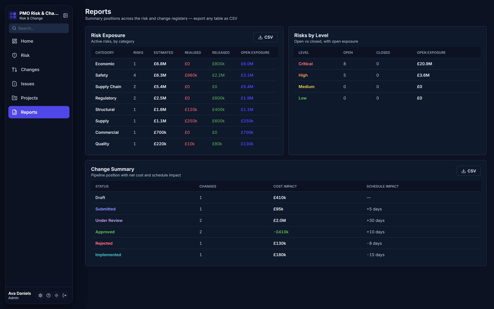

A working day inside Vesta.
Screen by screen: how risks, issues, changes, projects and reports run through one live, permissioned platform.
Start where the risk actually is.
Sign in and the whole portfolio takes a posture. Critical and high risks, overdue mitigations, urgent issues and slipped reviews roll up into one banner, with a prioritised act-now queue underneath telling each person what deserves their morning.

Portfolio health RAG by programme and project, and the queue of items that need control action now.
The register your auditors will believe.
Score each risk on the 5×5 likelihood and impact matrix, current position against target. Give it an owner, a review cadence and mitigation actions, and quantify the exposure in pounds.
- Current versus target scoring on every risk
- Review dates that surface when they slip
- Exposure rolled up per project and programme


The register you keep in Excel today: scoring, owners, review dates and filters. Live, permissioned, and exportable to CSV or Excel when you need it back in a spreadsheet.
Approvals with a permanent record.
Change requests move through one governed workflow, and nowhere else:
- Draft
- Submitted
- Under review
- Decision
- Implemented
Before anyone approves, Vesta warns about the consequences: budget overrun, schedule slip, open risks on the affected project. The decision itself is recorded permanently, with who made it and when.

When a risk lands, it doesn't leave the system.
Escalate any risk into an issue with an owner and a resolution path, tracked alongside risks and changes on the same project. No separate tracker, no lost escalations, no "I thought you had it".
A register of record for the portfolio.
Every project with its contract value, dates, project manager and health. Group them into programmes you define, and the risk, issue and change picture rolls up with them.
- Contract values and key dates in one place
- Health RAG that reflects live registers, not memory
- Programme groupings defined by you, not the tool

Reporting that keeps up with the question.
Risk exposure by category and level. The change pipeline with its net cost and schedule impact. Everything exportable to CSV or Excel, so the steering pack takes minutes, not the night before.

Enterprise foundations from day one
-
Microsoft Entra ID single sign-onSign in with the identity your organisation already runs.
-
Role-based access controlEveryone sees exactly what their role allows, nothing more.
-
Full audit trailEvery action recorded, attributable and permanent.
-
Hosted on Microsoft AzureRuns on Microsoft's cloud, with no months-long deployment.
-
CSV & Excel import and exportYour data arrives easily and leaves freely.
See your portfolio in it.
Book a demo and we'll walk your own scenarios through Vesta: your registers, your programmes, your Tuesday.
A free trial is on the way. Founding customers get it first.